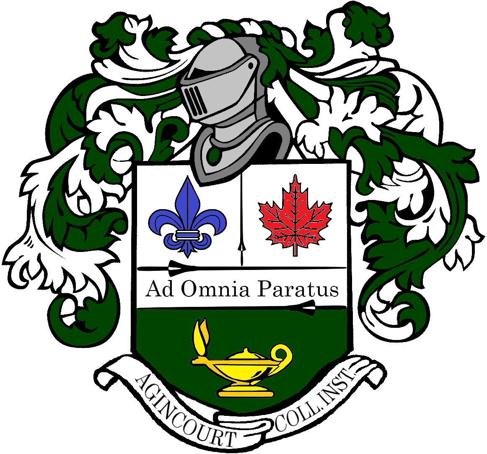

|
Karim Eweis
"The purpose of nature is the advancement and development of life." - Keith "Chief Keef Sosa" Farrelle Cozart
My name is Karim Eweis, and I am a first-year student at York University working towards a Bachelor's of Arts in Information Technology with Honors. Growing up, I've always had a passion for computers and technology. With my education at York, I plan on bringing my expertise into a space where I can benefit people and use my passion to work hard.
I am employed under the City of Toronto and am a proud and active member of my community. In my field of work, I am intricately involved with members of my community, such as the seniors, and minorities like myself, and am a firm believer that together we are stronger. After being surrounded by so many people of different ethnic backgrounds, religions, and pasts, I have developped a strong sense of empathy and peoples skills, and am eager to bring what I've learned in my part time employment to a full time field in the technology industry.
Email /
Resume /
Github
|
|
|
|
School of Information Technologies | Bachelors of Arts | Class of 2027
In this 4 year program, I will learn the intricacies of computers and system design, as well as various coding languages and aspects of hardware and software.
|
|

|
Agincourt Collegiate Institute | Ontario Secondary School Diploma | Class of 2023
Graduated with an Onatrio Scholar diploma (85% Average), as well as Certificat d'Etudes en Immersion Francaise (Completion of School in French Immersion).
|
|
|
High Five | Principles Of Healthy Child Development Certification | June 2022
The foundation of HIGH FIVE is a set of five healthy child development principles that are necessary for high-quality programs. This foundation is the result of in-depth investigation into what makes for high-quality child experiences as well as the real-world implementation of our ideas.
|
|
|
St. John's Ambulance Saint Jean | Standard First Aid - CPR C - AED | June 2022
Courses develop vital life-saving knowledge and skills essential for those looking to meet a variety of workplace requirements up to professional first responders, become a babysitter, learn about psychological first aid training, or become a Red Cross instructor.
|
|
|
City of Toronto, Scarborough Region, North York — Facility Attendant | October 2022 - Present
- Opens and closes facility including arming and disarming security systems independently
- Responds to inquiries from facility tenants, users, and staff, while solving complex tasks, and provides facility information
- Performs administrative tasks to support the program
- Assists facility maintenance staff during the annual maintenance break
|
|
|
City of Toronto , Scarborough, North York, Roy Wood Clubhouse — Customer Service Representative | September 2022 - Present
- Inputs registration through the Call Centre and in person
- Receives cash and various methods of payment
- Processes payments for registration
- Provides customer service and resolves client conflicts
|
|
{kind=link}